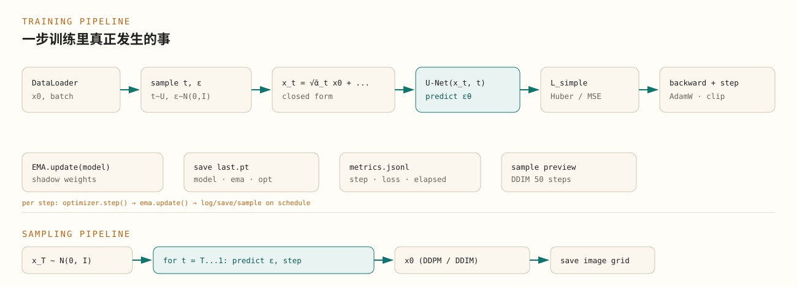
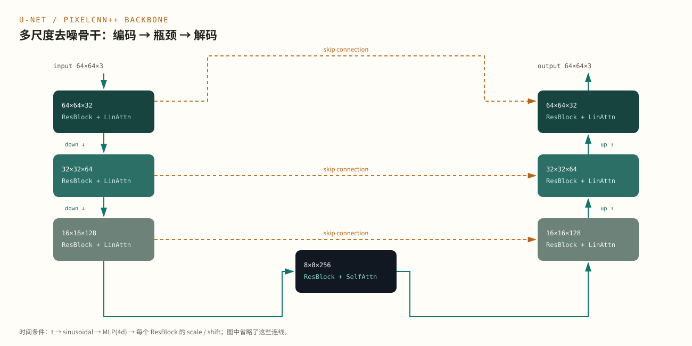

这是一篇工程笔记，重点是实现选择与权衡。DDPM 的数学推导见《DDPM 的数学原理》，本文不重复。代码示例来自 code/DDPM。
Abstract / 导读
数学篇回答“为什么能生成”，工程篇回答“怎样把它稳定地训练出来、采样出来、复现出来”。本文以 code/DDPM 的实现为线索，拆解 U-Net 的每个块、时间条件、注意力、损失与优化、数据管线、EMA、检查点和 DDIM 加速，并列出实际调参时最容易踩的数值与性能陷阱。DDPM 的完整数学推导见《DDPM 的数学原理》，本文不重复。
导读：公式之外的工程问题 #
把 DDPM 写成公式只需要几行，把它做成一个能训练、能复现、能在 CPU 上跑通的系统，需要回答另一组问题：
- 网络应该长什么样？为什么是 U-Net，而不是普通 CNN？
- 时间步 怎样进入网络？为什么不能只把它拼到输入上？
- 损失用 L1、L2 还是 Huber？梯度要不要裁剪？
- 为什么需要 EMA？EMA 和原始权重什么时候用哪个？
- 检查点里应该存什么，才能断点续训、又能直接采样？
- 1000 步 DDPM 太慢，DDIM 为什么能 50 步？代价是什么？
- 哪些数值操作会在 接近 或 时爆炸？
本文按训练和采样的真实数据流展开，并把这些选择和代码里的模块一一对应。
总体管线 #
一次训练 step 和一次采样，是两条方向相反、但共享同一个 U-Net 的流水线。


训练 step 的核心只有几行：
timesteps = torch.randint(
0, diffusion.timesteps, (images.shape[0],), device=device, dtype=torch.long
)
loss = diffusion.p_losses(model, images, timesteps)
optimizer.zero_grad(set_to_none=True)
loss.backward()
torch.nn.utils.clip_grad_norm_(model.parameters(), 1.0)
optimizer.step()
ema.update(model)对应 src/dppm/train.py 的训练循环。注意这里没有显式构造 ：它藏在 p_losses 内部，由 q_sample 用闭式完成。这样每个 step 只需要一次网络前向和一次反向，不需要展开 步。
采样则是：
image = torch.randn(shape, device=device)
for t_index in reversed(range(diffusion.timesteps)):
t = torch.full((shape[0],), t_index, device=device, dtype=torch.long)
image = diffusion.p_sample(model, image, t, t_index)DDIM 版本只遍历一个子序列，见后文。
U-Net 结构 #
DDPM 的骨干不是“任意 CNN”，而是一个带时间条件、带跳跃连接、多分辨率的 U-Net。它要同时完成两件事：
- 在不同尺度上识别“哪些是信号、哪些是噪声”；
- 根据当前噪声级别 ，决定去噪的力度。


以 dim=32, dim_mults=(1,2,4,8)、64×64 输入为例：
| 阶段 | 分辨率 | 通道 | 主要操作 |
|---|---|---|---|
| 输入 | 64×64 | 3 | 1×1 卷积升维 |
| 编码 L1 | 64×64 | 32 | ResBlock ×2 + LinearAttention |
| 编码 L2 | 32×32 | 64 | ResBlock ×2 + LinearAttention |
| 编码 L3 | 16×16 | 128 | ResBlock ×2 + LinearAttention |
| 瓶颈 | 8×8 | 256 | ResBlock ×2 + SelfAttention |
| 解码 L3 | 16×16 | 128 | 拼接 skip + ResBlock ×2 |
| 解码 L2 | 32×32 | 64 | 拼接 skip + ResBlock ×2 |
| 解码 L1 | 64×64 | 32 | 拼接 skip + ResBlock ×2 |
| 输出 | 64×64 | 3 | 1×1 卷积 |
默认的 dim_mults=(1,2,4) 少一级下采样，瓶颈在 16×16；图里展示的是博客/论文常用的四级配置。两者结构相同，只是级数不同。
残差块与条件归一化 #
每个 ResnetBlock 由两个 Block 组成，每个 Block 是：
weight-standardized 3×3 conv → GroupNorm → 可选 scale/shift → SiLUGroupNorm 不依赖 batch 大小，特别适合 DDPM 这种 batch 可能很小、又不想让归一化统计量随 batch 波动的场景。U-Net 里没有 BatchNorm，因此训练和采样的行为一致，也不需要维护 running statistics。
残差连接保证深层网络仍然容易优化：
h = self.block1(x, scale_shift=scale_shift)
h = self.block2(h)
return h + self.res_conv(x)权重标准化 #
普通卷积的权重直接参与卷积；weight-standardized conv 先对每个输出通道的权重做标准化：
然后再做卷积。它起到类似 BatchNorm 的“稳定尺度”作用，但不依赖 batch 统计，也不会在训练/采样之间产生行为差异。实现里对每个输出通道在 (in_channels, kH, kW) 上求均值和方差，eps 防止除零。
下采样与上采样 #
编码器用 2×2 像素重排（space-to-depth）加 1×1 卷积做下采样，而不是 stride-2 卷积：
Rearrange("b c (h p1) (w p2) -> b (c p1 p2) h w", p1=2, p2=2)
Conv2d(dim * 4, dim_out, 1)这样下采样没有重叠、没有额外的平滑，信息损失更可控。解码器用最近邻上采样加 3×3 卷积；简单、稳定，也不会产生棋盘格伪影。
时间条件 #
同一个 U-Net 要在 和 执行完全不同的去噪任务。时间 必须进入网络的每一层，而不是只在输入端拼一个标量。
DDPM 使用正弦位置嵌入：
然后过一个两层 MLP：
self.time_mlp = nn.Sequential(
SinusoidalPositionEmbeddings(dim),
nn.Linear(dim, dim * 4),
nn.GELU(),
nn.Linear(dim * 4, dim * 4),
)得到的 time_emb 在每个 ResBlock 里被映射成两组通道数相同的向量，用于仿射变换：
time_emb = self.mlp(time_emb)[:, :, None, None]
scale, shift = time_emb.chunk(2, dim=1)
h = self.block1(x, scale_shift=(scale, shift))也就是：
这比“把 拼到图像通道上”更有效：它直接调制每个残差块的归一化后激活，让不同噪声级别可以复用同一套卷积权重，只改变“去噪强度”。
注意力与内存 #
U-Net 在高分辨率层使用线性注意力，在瓶颈使用完整自注意力。这是显存和表达力的折中。
- 完整自注意力： 个位置两两计算，复杂度 ；
- 线性注意力：用核技巧把注意力写成全局上下文，复杂度 。
在 64×64 输入、16×16 特征图上，，完整注意力还可接受；到 64×64 的 ， 会迅速吃满显存。因此：
- 编码/解码的高分辨率层：
LinearAttention； - 中间的 8×8 或 16×16 瓶颈：
Attention； - 每个注意力都包在
PreNorm+Residual里，保证稳定。
代码在 src/dppm/model/attention.py。如果显存不足，优先减少高分辨率层的通道数或注意力头数，而不是直接去掉所有注意力。
损失、优化与稳定性 #
损失函数 #
数学篇式 (13) 是均方误差。工程实现通常提供 L1、L2、Huber 三种：
if loss_type == "l1":
return F.l1_loss(noise, predicted_noise)
if loss_type == "l2":
return F.mse_loss(noise, predicted_noise)
if loss_type == "huber":
return F.smooth_l1_loss(noise, predicted_noise)Huber 在误差较小时近似 L2、误差较大时近似 L1，对异常值和训练早期的大误差更稳健。博客和本实现默认使用 Huber；如果数据干净、训练稳定，L2 也完全可用。
梯度裁剪 #
DDPM 的训练损失在 很大时可能更大，早期梯度尺度不稳定。默认裁剪：
torch.nn.utils.clip_grad_norm_(model.parameters(), 1.0)这不是 DDPM 数学的一部分，而是深度网络训练的常规稳定化手段。裁剪阈值太大等于没裁，太小会让学习变慢；1.0 是一个安全的起点。
优化器与学习率 #
博客使用 AdamW、学习率 。DDPM 对学习率比较敏感：太大容易在早期出现噪声预测的震荡，太小则收敛慢。CPU 小模型可以先用 2e-4；如果 loss 长期不降，先检查数据范围和损失类型，再考虑调学习率。
混合精度 #
GPU 上可以用 torch.autocast + GradScaler 把大部分矩阵运算放到 fp16/bf16，显著减少显存、提高吞吐。CPU 默认仍是 fp32；部分 CPU 支持 bfloat16，但收益依硬件而定，不建议作为默认。
当前 code/DDPM 为了 CPU 可复现性，默认不启用 AMP。若迁移到 GPU，建议：
scaler = torch.amp.GradScaler("cuda")
with torch.autocast("cuda", dtype=torch.bfloat16):
loss = diffusion.p_losses(model, images, timesteps)
scaler.scale(loss).backward()
scaler.step(optimizer)
scaler.update()注意：AMP 只改变计算精度，不改变噪声调度；采样时通常也用 autocast，但要确保 sqrt、exp 等操作在稳定范围内。
数据管线 #
DDPM 对数据范围很敏感。前向过程假设数据大致零中心、单位方差，逆向过程从标准高斯出发，因此训练图像通常缩放到 ：
transforms.Compose([
transforms.Resize(image_size, antialias=True),
transforms.CenterCrop(image_size),
transforms.RandomHorizontalFlip(),
transforms.ToTensor(),
transforms.Normalize([0.5] * channels, [0.5] * channels),
])ToTensor 把 PIL 图像变成 ，Normalize(0.5, 0.5) 再映射到 。如果这里用了 ImageNet 均值方差，或者忘记归一化，模型会学到错误的噪声尺度，表现为采样发灰、对比度异常或完全失败。
本实现支持四种数据源：
| 数据源 | 参数 | 说明 |
|---|---|---|
| 合成形状 | --source synthetic |
无需下载，适合烟雾测试 |
| 本地图片 | --source imagefolder --data-dir ... |
每个子目录一类 |
| CIFAR-10 | --source cifar10 --cifar-root data |
可用 --download |
| HuggingFace | --source hf --hf-dataset ... |
需要 datasets，可指定图像列名 |
CPU 默认 num_workers=0，避免多进程开销；GPU 或大数据集可以增大。DataLoader 使用固定 generator，配合 set_seed 保证可复现。数据增强只做水平翻转；DDPM 对几何变换比较敏感，复杂的颜色抖动、裁剪会改变噪声分布。
EMA 与检查点 #
为什么需要 EMA #
DDPM 的采样对权重扰动很敏感。训练后期的单步权重可能在某批数据上波动，直接用最后一步的权重采样，样本质量可能不如“最近一段时间权重的平均”。
EMA 维护一份影子权重：
beta=0.9999 时，有效平均窗口约 步。训练步数很少时，EMA 会严重滞后于当前模型，此时可以降低 beta 或关闭 EMA；本仓库的烟雾测试用 0.9，只是为了让两步训练也能产生有效预览。
for ema_parameter, parameter in zip(self.model.parameters(), model.parameters()):
ema_parameter.mul_(self.beta).add_(
parameter.detach(), alpha=1.0 - self.beta
)采样时优先用 EMA 权重；训练日志里也可以同时记录原始模型和 EMA 模型的预览，判断 EMA 是否真的带来提升。
检查点里应该有什么 #
一个可续训、可直接采样的检查点至少包含：
model：U-Net 权重；ema：EMA 影子权重（可选）；optimizer：优化器状态；model_config/diffusion_config/data_config：重建模型和采样所需配置；epoch/step：续训位置；format：检查点版本。
只保存 model.state_dict() 是不够的：采样时不知道 dim_mults、图像尺寸、噪声调度，就无法重建网络和扩散过程。sample.py 会从检查点读取这些配置，而不是要求用户重新输入。
检查点通过 torch.load(..., weights_only=False) 读取，因为里面包含配置字典。只加载自己信任的检查点；不要加载来源不明的 .pt 文件。
采样加速：DDPM 与 DDIM #
DDPM 的祖先采样需要 次网络前向。默认 ，在 CPU 上很慢；即使 GPU，1000 步也是明显的延迟。
DDIM 的核心是：不要求逆向过程必须是马尔可夫链，而是构造一条与训练目标一致的确定性（或半随机）轨迹。它只取 步中的一个子序列：
其中
当 时，采样完全确定；给定同一个 ，输出固定。eta 控制随机性，eta=0 是最常用的确定性 DDIM。
times = torch.linspace(0, timesteps - 1, steps).round().long().unique()
times = times.sort(descending=True).values
for position, current in enumerate(times):
eps = model(image, t_tensor)
x0 = (image - sqrt(1 - ab_t) * eps) / sqrt(ab_t)
x0 = x0.clamp(-1.0, 1.0)
image = sqrt(ab_prev) * x0 + sqrt(1 - ab_prev) * eps| 采样器 | 网络前向次数 | 随机性 | 适用场景 |
|---|---|---|---|
| DDPM | （默认 1000） | 每步注入噪声 | 论文算法复现、质量优先 |
| DDIM | 可配置（默认 50） | eta=0 时确定 |
CPU 推理、快速预览、批量生成 |
DDIM 不是“免费加速”：步数太少时，离散化误差变大，细节会损失；50 步通常是质量和速度的折中，10–20 步适合预览。无论 DDPM 还是 DDIM，不同初始噪声仍然产生不同样本；确定性只表示“同一初始噪声对应同一输出”。
数值与性能陷阱 #
- 的数值边界：后验方差在 为 ，最后一步直接返回均值、不再加噪声；同时 很小，注意不要在这里引入无意义的除零或放大误差。
- 数据范围：训练用 ，保存时映射回 ；如果训练用 ，噪声尺度和输出范围都会错。
- 调度不一致：训练和采样必须使用同一个
beta调度、同一个 。检查点里保存配置，采样时不要用命令行默认值覆盖。 - 过度裁剪 ：DDIM 中把 裁到 可以稳定训练/采样，但会引入偏差；如果发现颜色饱和，尝试关闭或放宽裁剪。
- BatchNorm：不要用 BatchNorm。小 batch 下统计量噪声大，训练/采样行为不一致；GroupNorm 更合适。
- 注意力显存：高分辨率用完整自注意力会 爆炸；用线性注意力，或把完整注意力限制在瓶颈。
- EMA 滞后：训练步数少于平均窗口时，EMA 可能几乎没更新；短训练要降低
beta。 - 检查点配置漂移：续训时模型/扩散配置必须与检查点一致，否则加载权重会报错或产生错误结果。
- CPU 线程/worker 过度订阅：
num_workers过大、torch线程数过多会互相争抢；CPU 先用num_workers=0。 torch.load安全：只加载可信检查点；不要把用户上传的.pt直接当配置读取。
代码地图与复现 #
| 模块 | 职责 |
|---|---|
src/dppm/config.py |
配置 dataclass、参数校验、JSON 序列化 |
src/dppm/data.py |
合成数据、ImageFolder、CIFAR-10、HuggingFace、变换 |
src/dppm/model/blocks.py |
残差、上下采样、时间嵌入、weight-standardized conv |
src/dppm/model/attention.py |
完整/线性注意力、PreNorm |
src/dppm/model/unet.py |
U-Net 组装与前向 |
src/dppm/diffusion.py |
前向、损失、DDPM/DDIM 采样 |
src/dppm/ema.py |
权重 EMA |
src/dppm/train.py |
训练循环、日志、检查点、预览 |
src/dppm/sample.py |
检查点加载与图片生成 |
src/dppm/cli.py |
train / sample / inspect / smoke |
最小复现：
cd code/DDPM
uv sync
source .venv/bin/activate
dppm smoke --output-dir runs/smokesmoke 用 32×32、dim=16、dim_mults=(1,2)、2 步训练和 2 步 DDIM，验证整条链路，而不是验证生成质量。默认 64×64 模型约 260 万参数，CPU 上可以训练小数据集；完整 Flowers/CIFAR 训练需要更长时间。
进一步优化 #
按收益/成本排序，可以考虑：
- GPU + AMP：最直接的吞吐提升；注意用
GradScaler，并在采样时保持数值稳定。 - DDIM / DPM-Solver：减少采样步数，尤其适合 CPU 或交互式预览。
torch.compile：对固定形状的 U-Net 可能有帮助，但首次编译和 CPU 收益因环境而异；先测再开。channels_last：GPU 上卷积更友好；CPU 收益通常有限。- 梯度累积：显存不足时模拟更大 batch；注意 EMA 更新频率和学习率缩放。
- 激活检查点：高分辨率/深 U-Net 训练时用计算换显存。
- Latent Diffusion：把扩散搬到 VAE 潜空间，是高清生成的主流路线；本质仍是本文的 DDPM，只是数据空间换了。
- 条件生成：类别嵌入、文本 cross-attention、ControlNet；这会把“随机采样”变成“按需求生成”，但需要额外数据和结构。
不要在数据、调度和损失还没对齐时就开始堆优化。DDPM 的很多“训练不收敛”其实是数据范围、噪声调度或检查点配置的问题。
小结 #
- U-Net 提供多尺度去噪能力；时间嵌入让同一套权重适配不同噪声级别。
- GroupNorm + 权重标准化 让训练不依赖 batch 统计；线性注意力控制高分辨率显存。
- Huber/MSE + 梯度裁剪 + AdamW 是稳定训练的基本组合；EMA 提升采样质量。
- 检查点必须保存模型、EMA、优化器和三份配置，才能可靠续训和采样。
- DDIM 用更少步数近似同一条生成轨迹；
eta=0时确定性，适合 CPU。 - 数值上最需要小心的是数据范围、 的除法、调度一致性和注意力显存。
延伸阅读 #
- 数学篇：DDPM 的数学原理。前向、后验、ELBO、score 与采样的完整推导。
- 译文：去噪扩散概率模型（DDPM）。论文正文与实验。
- DDIM：Denoising Diffusion Implicit Models（Song 等，2021）。
- Improved DDPM：Improved Denoising Diffusion Probabilistic Models（Nichol & Dhariwal，2021）。
- Latent Diffusion：High-Resolution Image Synthesis with Latent Diffusion Models（Rombach 等，2022）。
- 代码：本仓库的
code/DDPM，包含本文讨论的全部模块和 CLI。